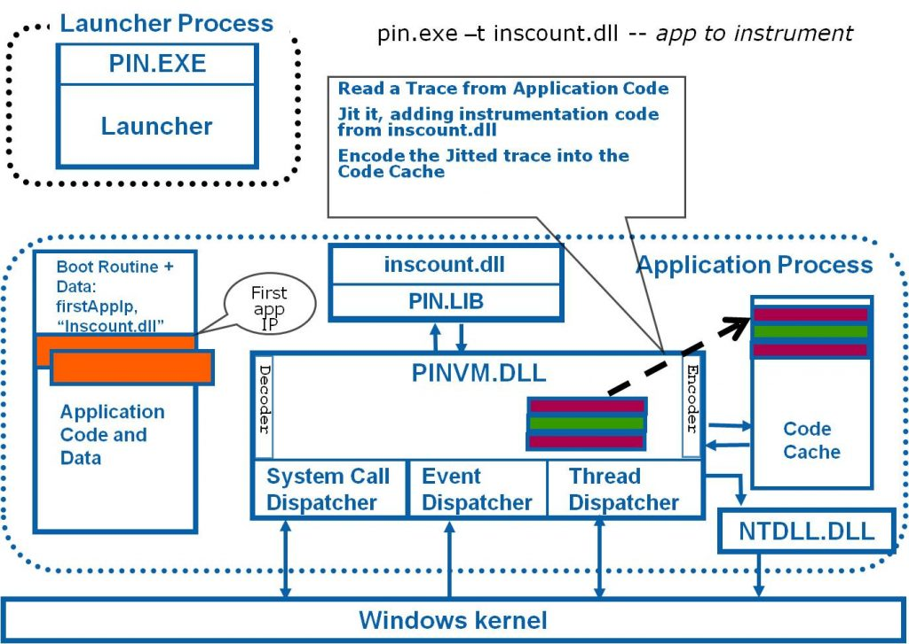
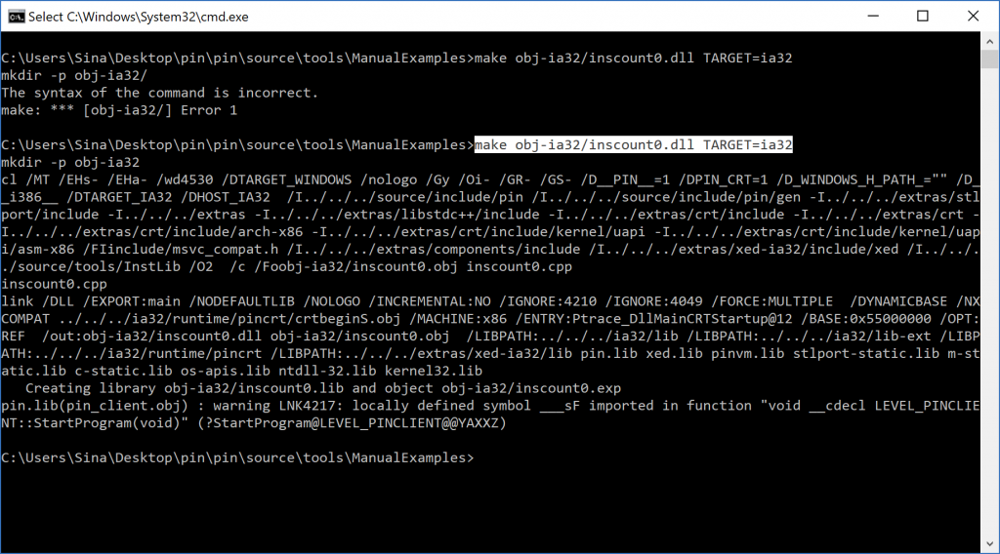
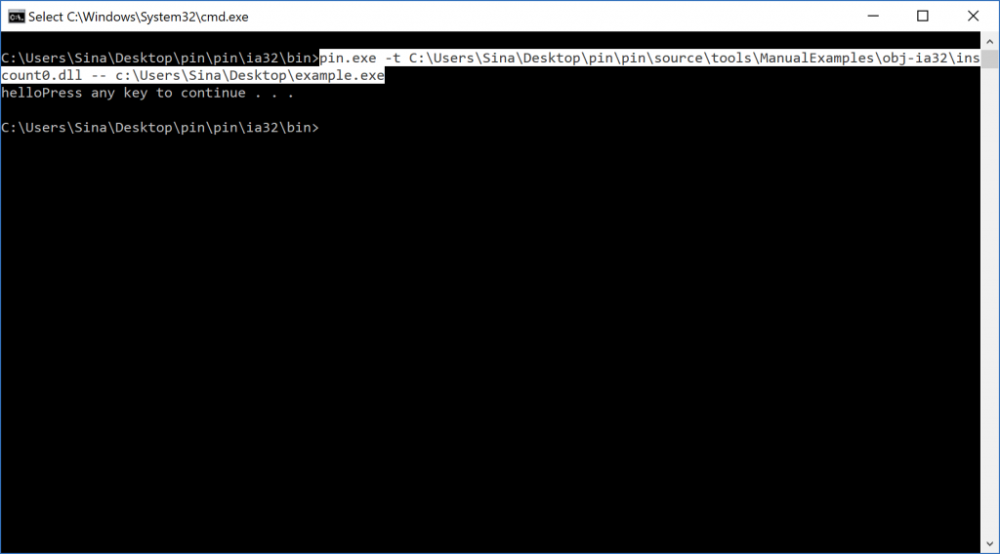

As I promised previously in Pinitor’s topic, I prepare a post about how to build your first pin tool.
Building a pin tool is somehow difficult when they didn’t update their sample tools so that it doesn’t work in Visual Studio 2015 or newer versions. By the way, it took me more than 2 days to resolve all the errors and compile a Hello World!
After compiling the first program, there where lots of new problems, so, believe me, it annoys you a lot but keep in mind if you discover a new problem in compiling, please comment about that and I add your problem and solving solution to the post.
After opening the Visual Studio, I see a huge number of errors that didn’t seem to be solved without violence ;) so that I decided to use Gnu Win32 make.exe in order to compile my pin tool.
Let start.
Preparing Environment
First of all download pin from Intel’s official site and then download Gnu Win32 make.exe and its dependencies. In the following list, I mentioned the dependencies that I downloaded and put beside of make.exe (in the same directory) but it might be something different in your case then you should download them manually based on the error that “make” shows you when you run it.
Libicon2.dll
Libintl3.dll
Libcharset.dll
After solving all the errors about dependency then I realized that make.exe uses cut.exe in its compiling process so I also download cut.exe and as you might know, cut.exe has some dependencies too!
Cggiconv-2.dll
Cygintkl-8.dll
Cygwin1.dll
I found this dll files from the path where Cygwin GCC is installed (it is also available at CoreUtils) so you can first download Cygwin from here then you can find and copy cut.exe and its dependencies from where you installed it.
Again running make causes new errors :(
This time make.exe needs iconv.exe and after downloading this file make.exe seems to run correctly.
You should also have c++ compiler installed previously and as I already install Visual Studio then these files are ready and I just need to provide an environment variable that points to this path and I’m good to go.
In the case of providing an environment variable, I pressed Windows Key+ R (to open run.exe) then type sysdm.cpl.
Open sysdm.cpl > Advanced tab > Environment Variable
Then in User Variables for Sina (Sina is my account name.) click on path to edit it. By adding a new variable to this section you can always access to the content of the folder without changing the working directory to this path, and make.exe uses cl.exe to compile a pin tool source code into the binary module.
In my visual studio, the path is as follows but it might be different in your case.
1
C:\Program Files(x86)\Microsoft VisualStudio 14.0\vc\bin
and in the case when you wanna compile a 64bit pin tool then you should change this variable to :
1
C:\Program Files(x86)\Microsoft VisualStudio 14.0\vc\bin\Amd64
Important Note: Keep in mind to restart your computer after adding a new variable or modifying one.
In my case when I wanna change my context to build x64 binaries then I add \amd64 to the path and restart the computer again.
You should now be able to build your first pin tool but there are some errors that sometimes might happen because of linker problem or syntax error or header mismatching that I discuss some of them in the rest of this topic
Please note that as I said above, if you encountered new errors please comment on this post to add your problem to the following list.
Problem with Linking
The very first problem that I encountered during compiling my first application was that linker can’t find libraries of some APIs.
In my case it needs kernek32.lib.
I found kernel32.lib from the following path (And you know it might be different in your case.)
1
C:\Program Files(x86)\Windows Kits\10\lib\10.0.15063.0\um\x86\kernel32.lib
Or in the case of 64-bit pin tool :
1
C:\Program Files(x86)\Windows Kits\10\lib\10.0.15063.0\um\x64\kernel32.lib
I copied this file to the make.exe path but you can also export this path to path in environment variables as I described previously.
After copying this file I added the following line to my tool’s source code after all #include(s) :
1
#pragma comment(lib, "kernel32.lib")
You by now should understand that your tool might need another .lib file to compile so you can provide more libraries for linker, same as what you did for kernel32.lib.
Building A Pin Tool
To build a new pin tool you should use make as follows :
In the case of ia32 or x86 architecture :
1
make.exe obj-ia32/inscount0.dll TARGET=ia32
In the case of Amd64 or x64 architecture :
1
make.exe obj-intel64/inscount0.dll
Note: If your tool source file is like “inscount0.cpp” then you should use be “inscount0.dll”, I mean its name should be same as source code except its extension which changes from .cpp to .dll.

Please note as I mentioned above you should change Environment Variable in the case of x64 and x86 version.
Run Pin with your Tool
To run your pin tool you should run the following command.
1
Pin –t \source\tools\ManualExamples\inscount0.dll – cmd.exe /c dir

I just instrument cmd.exe using pin by inscount0.dll tool. I also pass the dir as an argument to cmd.exe.
The last thing
As I tested, pin tool has a problem with passing x64 tools to the x64 version of the pin so please don’t use the following path for running x64 tools :
1
C:\Users\Sina\Desktop\pin.exe
Instead, you should just use the following path (For x64 tools) :
1
C:\Users\Sina\Desktop\pin\intel64\bin\pin.exe
That’s it, guys,
I should also give my special thanks to Sobhan Sekhavatian one of my best friends for helping me to write this post.
I hope by now you built your first pin tool ;)
Comments powered by Disqus.